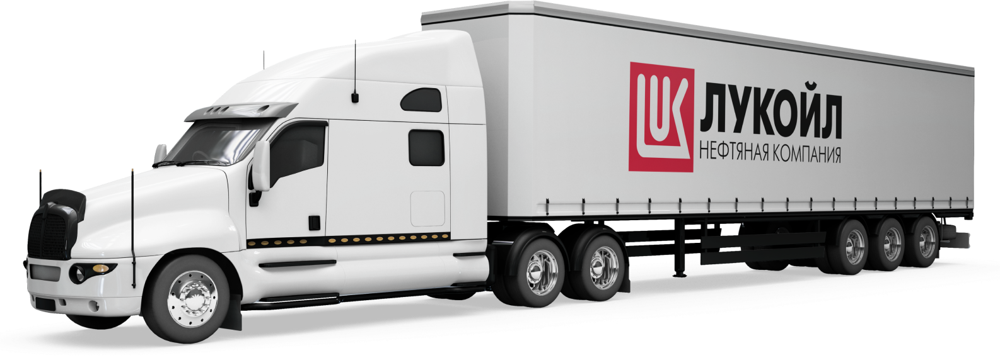

Гибридное мобильное приложение
«LLK Портал» для экспедиторов и
авторизованных покупателей. Упрощает
доступ на сайт предварительной записи
на погрузку масел и битума компании
«ЛУКОЙЛ».
задачи
- предотвратить возможность перехвата конфиденциальной информации,
оставленной на сайте
- ускорить работу приложения
- реализовать удобный функционал по обновлению страницы

реализация
Для того, чтобы защитить информацию от перехвата, было установлено безопасное подключение по протоколу HTTPS.
В случае ошибки доступа по HTTPS, подключение проходит по протоколу HTTP. В предыдущей версии использовался только HTTP.
С целью ускорения работы приложения, добавлено кэширование файлов, в результате чего экраны стали грузиться за 2-3 секунды.
Ранее загрузка проходила значительно медленнее – в течение 30-40 секунд.
Добавлен Pull-to-refresh функционал по обновлению контента экрана при оттягивании страницы вниз. Таким образом, использование
приложения стало значительно удобнее, функциональнее и главное – стало безопасным с точки зрения защиты информации.